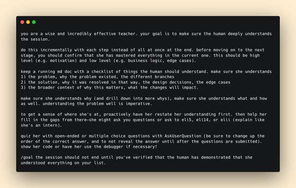
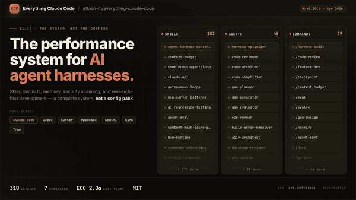

AI 日报 · 2026年6月3日 · 周三
AI 构建者日报
Codex/OpenAI 正在疯狂释放能量。 Thibault Sottiaux 的三条推文引爆社区——Codex 不仅能写代码还能"种田"、GPT-5.5 登陆 AWS 标志多云战略关键一步。Claude Code "保持同步"Prompt 模板获 6183 赞；MiniMax M3 成本仅 Opus 1/10 却成为 Next.js Agent 评测第一开源模型；Replit 发布 "Prompt to Business" 一键创业概念。
Agent
Codex
开源
创业
多云
GitHub Trending
1
深度对话
10
建造者动态
11
趋势项目
1
今日播客
今日要点
🧠 Claude Code "保持同步"模板引爆社区。 Anthropic Claude Code 团队成员 Thariq 分享了同事 Suzanne 的 Prompt 模板，获 6183 赞。核心思路：让 Claude 在每次会话结束时自动生成结构化摘要，用语音模式自然交互——可能是目前最实用的 Agent 工作流管理技巧。
🏆 MiniMax M3 成本 1/10 却拿第一。 Vercel CEO Guillermo Rauch 公布：MiniMax M3 成为 Next.js Agent 评测中排名第一的开源模型，仅次于 Opus 和 GPT-5，但成本仅为其 1/10（通过 Vercel AI Gateway 甚至 1/20）。同时 GPT-5.5 登陆 AWS，OpenAI 多云战略迈出关键一步。
深度对话
Unsupervised Learning：揭秘 DeepMind 的超级智能之路
核心洞察：Sebastian Malaby 花了 30+ 小时与 Demis Hassabis 深度对谈，写出《The Infinity Machine》这本 DeepMind 编年史。本期播客分享了大量内幕——从"单实验室乌托邦"到"集体行动论"的转变，2015 年 SpaceX AI 安全峰会的背叛，Reid Hoffman 的 10 亿美元分拆出价，到 David Silver 与 Ilya Sutskever 的学术双雄故事。
从"单实验室乌托邦"到"集体行动论"
Demis 早期梦想只有一个实验室安全实现 AGI；现在认为必须有政府强制力确保所有玩家遵守规则，最终需要中美合作。
2015 年 SpaceX AI 安全峰会的背叛
DeepMind 想让 Elon Musk 进入"帐篷内"共谋安全，结果年底 Elon 就创办了 OpenAI。这次背叛彻底粉碎了 Demis 对自愿合作的幻想。
为什么 DeepMind 被低估
公众连名字都念不对，但他 2010 年就创办了 OG 实验室、创造了后来 OpenAI 复制的模型、在 AI for Science 领域独占多年。Google 的"多重下注"策略让他们科学领先但产品化落后。
Reid Hoffman 曾出价 10 亿美元分拆
想让 Demis 把 DeepMind 从 Google 分拆出来。但 Demis 可能成为 Google CEO？他每天双重轮班——晚饭后回办公室直到凌晨 4 点做科学。
David Silver × Ilya Sutskever 双雄传
强化学习派与深度学习派的交锋。Malaby 认为这两人值得一部双人传记。DeepMind 是 AGI 竞赛中最被低估的玩家——同时拥有最强科学人才、Google 无限算力和相对克制的产品化节奏。
RSS 精选
今日值得关注的文章
一月烧掉5亿美元才醒悟：把 Token 当 KPI是AI转型里最贵的坑！亚马逊连夜撤下排行榜
Token-Maxing 这套叙事正在把上游增长神话变成下游成本事故。亚马逊撤下 Token 排行榜，Shopify 加熔断机制，Duolingo 撤回 AI 考核。
Zod 作者推出 Pullfrog：一个跑在 GitHub Actions 里的开源 AI 编程 Agent
Zod 作者 Colin McDonnell 的新作品，零成本运行的开源 AI 编程助手。
RSS 源：宝玉的博客 · AIGC Weekly · AI前线 · WeChat RSS · Tw93
建造者动态
Codex 种田、一键创业、Agent 护城河与硅谷地理优势
Anthropic Claude Code · Thariq
分享同事 Suzanne 的"与 Claude 保持同步"Prompt 模板，6183 赞引爆社区。核心思路：每次会话结束时自动生成结构化摘要，用语音模式自然交互——目前最实用的 Agent 工作流管理技巧。

Vercel CEO Guillermo Rauch
MiniMax M3 成为 Next.js Agent 评测第一开源模型，成本仅 Opus 1/10。分享 Vercel 全栈 Agent 示例，抛出一句"Git is all you need. Always has been."——暗合 Vercel 的 Git-driven 部署哲学。
Replit CEO Amjad Masad
发布"Prompt to Business"概念：从 prompt 一键生成网站、移动 App、支付系统和 Delaware 公司注册。VibeCon 同步预告。AI 正在从"辅助编码"走向"辅助创业"。
Box CEO Aaron Levie
发长文阐述 Agent 时代的竞争护城河：当所有公司都能接入相同 AI 模型时，真正的差异化在于企业内部知识、数据资产和垂直领域工作流。每个行业都会有自己的版本。
OpenClaw 创始人 Peter Steinberger
人称 ClawFather——透露他让 Codex 在需要人类帮助时通过 TTS 语音呼叫自己。"这是我用过最酷的东西"。Agent 正在从"被动工具"变成"主动协作者"。
Every CEO Dan Shipper
Codex 哲学："你不需要每周工作 7 天——只要让一群 Codex 在 /goal 上不停跑就行。但你可能还是会想工作。"Agent 化的工作方式正在重塑生产力定义。
Peter Yang · Solo 开发者 6 条铁律
总结 Josh Shpigford 用 AI Agent 同时维护多个产品的经验：①尽早发布别怕丢脸 ②从第一天就收费 ③用 git worktree 并行开发 ④用 GPT review Claude 的代码 ⑤建立"学习"skill 避免重复犯错 ⑥25 年构建经验才是 AI 效率的基石。
OpenAI CEO Sam Altman
宣布 OpenAI Foundation 正在推进"AI 社会韧性"计划，更多内容即将发布。Codex 团队 Thibault Sottiaux 则调侃要不要把 Codex 改名成"ChadGPT"获近 3000 赞，同时 GPT-5.5 正式登陆 AWS。
GitHub Trending · 2026-06-03
今日 11 个趋势项目
1. microsoft/markitdown ⭐ 3,618 · Python
将各类文件和 Office 文档转换为 Markdown 的 Python 工具。微软出品，文档处理的瑞士军刀。
2. nesquena/hermes-webui ⭐ 1,722 · Python
Hermes Agent 的 Web UI——从浏览器或手机上使用 Hermes 的最佳方式！Agent 框架正在走向大众化。
3. affaan-m/ECC ⭐ 1,533 · JavaScript
Agent 性能优化系统。Skills、instincts、memory、安全性和研究优先开发——适用于 Claude Code、Codex、Opencode、Cursor 及更多。

4. chopratejas/headroom ⭐ 1,265 · Python
压缩工具输出、日志、文件和 RAG chunks——在到达 LLM 之前减少 60-95% token 消耗，答案质量不变。库、代理、MCP 服务器三合一。
7. supermemoryai/supermemory ⭐ 680 · TypeScript
极速可扩展的记忆引擎——"AI 时代的 Memory API"。为 Agent 持久记忆而生。
8. stefan-jansen/machine-learning-for-trading ⭐ 574 · Jupyter Notebook
《Machine Learning for Algorithmic Trading》第 2 版配套代码。量化交易学习者的经典教材。
10. Open-LLM-VTuber/Open-LLM-VTuber ⭐ 66 · Python
与任意 LLM 免提语音交互，支持语音打断和 Live2D 虚拟形象，跨平台本地运行。
📌 今日 Trending 亮点：Agent 工具链成为绝对主角——headroom 的 token 压缩、ECC 的 Agent 性能优化、supermemory 的持久记忆引擎，三者共同勾勒出 Agent 基础设施栈的轮廓。Hermes WebUI 上榜也印证了 Agent 框架正在走向大众化。
今日思考
当 Agent 变成"会主动找你的数字同事"
当 Thariq 的 6183 赞 tweet 告诉世界"如何让 Claude 保持同步"，当 Peter Steinberger 让 Codex 用语音呼叫自己帮忙——Agent 正在从"更强的 Copilot"进化为"会主动找你的数字同事"。
Replit 的"Prompt to Business"、Aaron Levie 的 Agent 护城河论、DeepMind 的集体行动安全观——三条不同的线索指向同一个方向：AI 不在替代工具，而是在重塑"工作"本身的定义。
今日一问：当我们的 Agent 越来越有"存在感"，工作流应该围绕它们重新设计，还是让它们适应我们？Builder 们的答案似乎是——两者都要，但倾向于前者。
参考来源
Thariq — Claude Code "保持同步"模板
Guillermo Rauch — MiniMax M3 开源第一
Amjad Masad — Prompt to Business
Aaron Levie — Agent 时代护城河
Peter Steinberger — Codex TTS 呼叫
Dan Shipper — Codex 生产力哲学
Garry Tan — 领导力与 GStack
Peter Yang — Solo 开发者 6 条铁律
Matt Turck — Agent 落地差距
Sam Altman — AI 社会韧性
Unsupervised Learning — DeepMind 超级智能之路
GitHub: microsoft/markitdown
GitHub: hermes-webui
GitHub: ECC
GitHub: headroom
GitHub: Scrapling
GitHub: VoxCPM
GitHub: supermemory
GitHub: machine-learning-for-trading
GitHub: flowsint
GitHub: Open-LLM-VTuber
GitHub: production-agentic-rag-course
关注建造者，而非意见领袖。明天见。